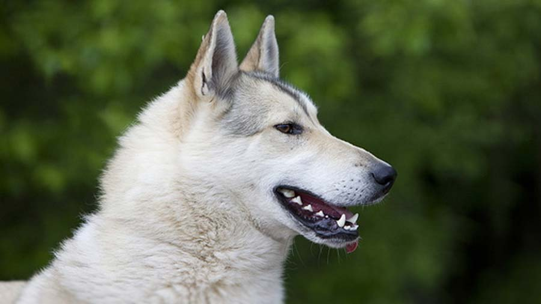
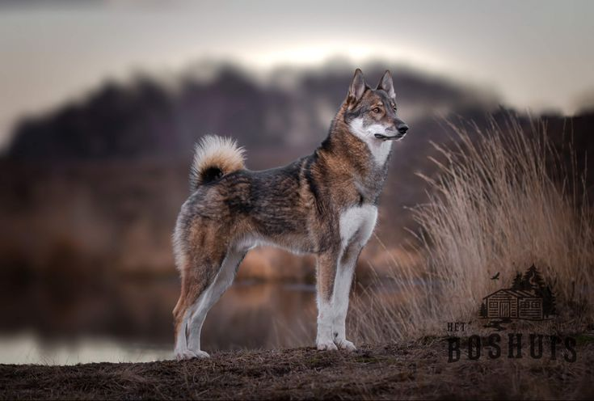
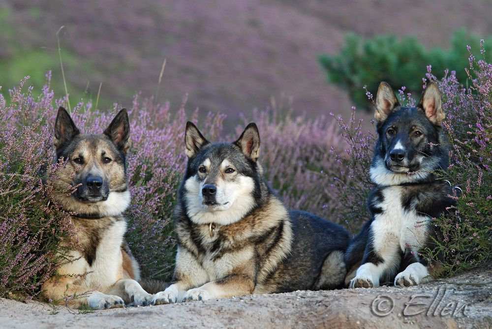
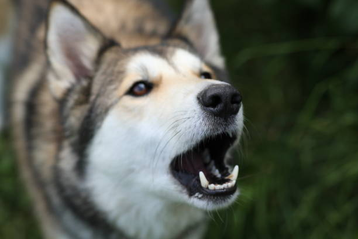

West Siberian Laika

origin
Russia
size
Medium
color
White
type
Purebred
breed group
Hound
Northern Breed (UKC)
character
Fluffy
temperament
Aggressive
Balanced
Lively
height
22-24 inches (56-61 cm)
weight
35-50 pounds (16-23 kg)
geography
Europe
overview
The West Siberian Laika is a medium to large size dog, strong, well built northern breed, with a general wolf-like appearance. The breed is never coarse or massive. Due to the arctic conditions in the country of origin, the coat is very important. It must be double, dense, very hard and not too long.
history
The West Siberian Laika originally comes from the North Ural and West Siberia. The current breed was developed from two different types. The breed is lighter in build and narrower in head than the East Siberian Laika. It is an all around hunting dog, used on birds and small game and also occasionally on large game. The West Siberian Laika was recognized by the United Kennel Club on January 1, 1996.
Photo Gallery


